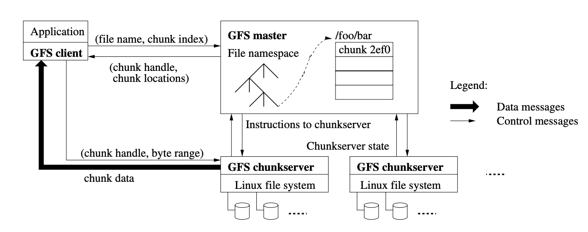
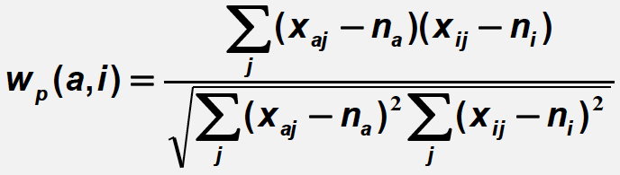
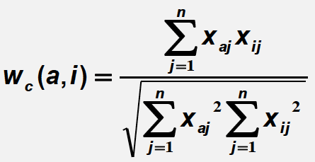

Text Retrieval
Natural Language Content Analysis
POS tagging
Text Access
Pull: search engines
Querying
Browsing
Push: recommender systems
Text Retrieval Problem
Search engine system returns relevant documents to users from collection of text documents.
Often called “information retrieval (IR),” but IR is much broader than text retrieval.
TR is an empirically defined problem and cannot mathematically prove one method to be the best.
We have two methods, but generally prefer ranking.
Document selection
Return the docs which system decides as relevant (absolute relevance)
Cons
The classifier can be inaccurate
“Over-constrained” query gets no relevant docs.
“Under-constrained” query gets too many docs.
Cannot see the degree of relevance or cannot prioritize docs
Document ranking
- Return the docs with a relevance measure exceeding a cutoff (relative relevance)
Text Retrieval Methods
Here are four funcitons to calculate relevance \(f(q,d)\), all of which tend to result in similar ranking functions.
Similarity-based models: \(f(q,d) = similarity(q,d)\)
- Vector space model
Probabilistic model: \(f(d,q) = p(R=1|d,q)\)
Probabilistic inference model: \(f(q,d) = p(d \rightarrow q)\)
Axiomatic model: f(q,d) must satisfy a set of constraints
Three variables:
Term Frequency (TF): \(c(term, d)\)
Document Length: \(|d|\)
Document Frequency (df): \(P(term | entire \space collection)\).
The Best models:
Pivoted length normalization
BM25: most popular
Query likelihood
PL2
Vector Space Model (VSM)
This model adopts similarity-based model to calculate relevance.
Term
Each term defines one dimension
N terms define an N-dimensional space
Query: \(q = (x_1, …, x_N)\) is query term weight.
Doc: \(d=(y_1,…,y_N)\) is doc term weight.
Simplest VSM
Dimension
Bag of Words: \(V=(w_1,…,w_n)\)
A text (such as a sentence or a document) is represented as the bag of its words.
It focuses on individual words.
It discards
phrases by multiple words
word ordering
Weight
- Bit Vector: \((x_i, y_i) \in {0,1}\) where 0 denotes present, 1 denotes absent.
Similarity function
Dot Product: \(\sum x_i y_i\)
This indicates the number of distinct query words matched in d
Problems
disregard the word counts
disregard the importance of words
VSM with TF-IDF weighting
This combines TF and IDF to address two problems of the simplest VSM.
Term Frequency Vector
This incorporates the word counts into weight.
\(x_i\) = count of word \(W_i\) in query \(c(W_i,q)\)
\(y_i\) = count of word \(W_i\) in doc \(c(W_i,d)\)
Inverse Document Frequency
This incorporates the importance of words into weight.
\(x_i = c(W_i,q)\)
\(y_i = c(W_i, d) * IDF(W_i)\) where \(IDF(W) = log[\frac{M+1}{df(w)}]\), M = number of docs, \(df(w)\) = number of docs containing W. The larger \(df(w)\), the smaller IDF.
However, term frequency has too much influence on weight.
Sub-linear TF Transformation
This aims to cap the influence of TF on weight as follows.
\[ y_i = \frac{(k+1)c(w,d)}{c(w,d)+k} < k + 1 (k >= 0) \]
Therefore,
\[ f(q,d) = \sum x_i y_i = \sum c(w,q) \frac{(k+1)c(w,d)}{c(w,d)+k} log{\frac{M+1}{df(w)}} \]
Document Length Normalization
Penalize a long doc as follows.
\[ normalizer = 1 -b + b \frac{|d|}{avdl} \]
where \(avdl\) = average doc length and \(b \in [0,1]\).
Here are two functions with document length normalization.
Pivoted Length Normalization VSM
\[ f(q,d) = \sum c(w,q) \frac{ln[1 + ln[1 + c(w,d)]]}{1 - b + b \frac{|d|}{avdl}} log \frac{M+1}{df(w)} \]
BM25/Okapi
\[ f(q,d) = \sum c(w,q) \frac{(k+1)c(w,d)}{c(w,d) + k(1-b+b\frac{|d|}{avdl})} log \frac{M+1}{df(w)} \]
where \(b \in [0,1]\) and \(k \in [0, + \infty)\).
System Implementation
The flow of system process
- Tokenization
normalize lexical units
stemming: mapping all inflectional forms to the same root form
- Indexing
Convert documents to data structure
Inverted index is most popular.
It prepares the following two data structures.
Dictionary (lexicon): modest size in memory
Term
# docs containing the term
total freq
Postings: huge size on disk
Term id
Doc id
Term freq
term position in doc
Construct inverted index by sort-based methods.
Parse docs & Count: (termID, docID, freq) sorted by docID
Local sort: (termID, docID, freq) sorted by termID among each document
Merge Sort: (termID, docID, freq) sorted by termID and docID among all documents
Output invert index file.
Compress inverted index, exploiting Zipf’s Law
TF compression
- assign fewer bits for frequent terms
DocID compression
d-gap: store difference like d1, d2-d1, d3-d2,…
- This is feasible due to sequential access of documents
Integer compression methods
Binary: equal-length coding
Unary: x>=1 is coded as x-1 one bits followed by 0
3 = 110
5 = 11110
\(\gamma\)-code: x = unary code for \(1+ k\) followed by uniform code for \(x-2^k\)in \(k\) bits where \(k = \lfloor log_2 x \rfloor\).
3 = 101 where \(k = 1\)
5 = 11001 where \(k=2\)
\(\delta\)-code: x = \(\gamma\)-code code for \(1+ k\) followed by uniform code for \(x-2^k\)in \(k\) bits where \(k = \lfloor log_2 x \rfloor\).
3 = 1001 where \(k_\delta = 1, k_\gamma = 1\)
5 = 10101 where \(k_\delta = 2, k_\gamma = 1\)
Scoring
\(f(q,d) = f_a(h(g(t_1,d,q),…,g(t_k,d,q)),f_d(d),f_q(q))\)
\(f_a(), f_d(d),f_q(q)\) are final score adjustments.
\(f_d(d),f_q(q)\) are pre-computed.
Zipf’s Law
A few words occur very frequently while most occur rarely.
Word rank by frequency * frequency \(\sim\) constant
\[ r(w)^\alpha \times F(w) = C \]
where \(\alpha \sim 1, C \sim 0.1\).
Evaluation
What to measure
Effectiveness/Accuracy
Efficiency
Usability
The Cranfield Evaluation Methodology
Build reusable test collections & define measures
A sample collection of documents
A sample set of queries/topics
Relevance judgments by human assessors
- These samples are reusable for different systems.
Compare the human judgement with the system output.
Quantify the evaluation
Precision = True Positive / (True Positive +False Positive)
Recall= True Positive / (True Positive + False Negative)
F-Measure: combine precision and recall
\(F_\beta = \frac{(\beta^2 + 1)PR}{\beta^2 P+R}\)
\(F_1 = \frac{2PR}{P+R}\)
The higher \(\beta\), the more recall affects \(F_\beta\).
\(F_0 = P\)
\(F_\infty = R\)
Precision-Recall (PR) curve
Average Precision
\(AP = \int_{0}^{1} p(r)dr\)
AP is the area under the precision-recall curve.
The average precision at every cutoff where a new relevant document is retrieved, divided by the total number of relevant documents.
Mean Average Precisions (MAP)
Evaluate the system based on \(n\) query results.
MAP: arithmetic mean of average precision. \(\frac{1}{n} \sum_{i=1}^{n} AP_i\)
gMAP: geometric mean of average precision. \((\Pi_{i=1}^{n} AP_i)^{\frac{1}{n}}\)
gMAP is more sensitive to low values and a good indicator of how the system performs in the presence of “hard” queries.
Mean Reciprocal Rank for the case with only one relevant document
- Average Precision = \(\frac{1}{r}\) where r is the rank position of the single relevant doc
Normalized Discounted Cumulative Gain (nDCG)
Applicable to multi-level judgements
- e.g., 1=non-relevant, 2=marginally relevant, 3=very relevant
\(DCG@10 = \sum_{i=1}^{n} (\frac{G_i}{\log i})\)
- You can compare DCG of different systems as long as they evaluate the same query results.
\(IdealDCG@10 = \max(\sum_{i=1}^{n} (\frac{G_i}{\log i}))\)
\(nDCG@10 = \frac{DCG@10}{IdealDCG@10}\)
- We can compare nDCG among different topic and queries, since nDCG ranges from 0 to 1.
Statistical Significance Tests
Sign Test
Wilcoxon
Pooling: no need for judging all the documents
Choose a diverse set of ranking methods
Obtain top-K documents from each method
Combine all the top-K documents to form a pool
Human assessors judge the documents in the pool.
Compare each method’s score
Probabilistic Model
\[ f(d,q) = p(R=1|d,q) \]
Classic probabilistic model: BM25
Language model: Query Likelihood. \(p(R=1|d,q) \sim p(q|d,R=1)\).
Divergence-from-randomness model: PL2
Unigram LM: The Simplest Language Model
Generate text by generating each word independently.
- \(p(w_1 w_2 … w_n) = p(w_1)p(w_2)…p(w_n)\)
\(p(w|\theta)=p(w|d) = \frac{c(w,d)}{|d|}\), where \(\theta\) denotes a language model.
Association Analysis
Topic LM: \(p(w|topic)\)
Background LM: \(p(w|B)\) for words such as the, a, is, we
Normalized Topic LM: \(\frac{p(w|topic)}{p(w|d)}\)
- This reduces the probability of common words and emphasizes the topic words.
The simplest ranking criterion
\(f(q,d) = \log p(q|d) = \sum \log p(w_i|d) = \sum c(w,q) \log p(w|d)\) where \(p(q|d) = p(w_1|d) \times … \times p(w_n|d)\)
The smoothed ranking criterion
To address \(p(w|d) = 0\), we should smooth the estimate.
\(p(w|d) = \begin{cases} p_{seen}(w|d)\\ \alpha_d p(w|C) \end{cases}\) to smooth LM, where \(p_{seen}\) is discounted ML estimate and \(C\) denotes a collection of language model.
Then,
\[ \log p(q|d) = \sum c(w,q) \log p_{seen}(w|d) + \sum_{c(w,d)=0} c(w,q) \log (\alpha_d p(w|C)) \\ = \sum_{c(w,d)>0} c(w,q) \log \frac{p_{seen}(w|d)}{\alpha_d p(w|C)} + |q| \log \alpha_d + \sum_{w \in V} c(w,q) \log p(w|C) \\ = \sum \log \frac{p_{seen}(w_i|d)}{\alpha_d p(w_i|C)} + |q| \log \alpha_d + \sum \log p(w_i|C) \]
This implies TF (\(p_{seen}(w_i|d)\)) -IDF (\(\frac{1}{p(w_i|C)}\)) weighting + Document length normalization(\(|q| \log \alpha_d\)).
As for doc length normalization, we should set smaller \(\alpha_d\) long documents because we need less smoothing. In this sense, this term penalizes the long documents.
We can ignore the last term for ranking since it is the same for all \(p(q|d)\).
How to determine \(p_{seen}(w_i|d)\) and \(\alpha_d\)
Here are two popular methods.
Linear Interpolation (Jelinek-Mercer) Smoothing
\[ p(w|d) = (1-\lambda) \frac{c(w,d)}{|d|} + \lambda p(w|C) \\ \alpha_d = \lambda \]
where \(\lambda \in [0,1]\).
Therefore , the ranking function is:
\[ f_{JM}(q,d) = \sum c(w,q) \log \frac{p_{seen}(w|d)}{\alpha_d p(w|C)} + |q| \log \alpha_d \\ = \sum c(w,q) \log[1 + \frac{1-\lambda}{\lambda} \frac{c(w,d)}{|d|p(w|C)}] \]
because we can ignore \(n \log \lambda\), which is independent from document.
So JM smoothing does not incorporate document length normalization.
Dirichlet Prior (Bayesian) Smoothing
\[ p(w|d) = \frac{|d| \frac{c(w,d)}{|d|} + \mu p(w|C)}{|d| + \mu}\\ \alpha_d = \frac{\mu}{|d| + \mu} \]
where \(\mu \in [0, +\infty)\).
Therefore, the ranking function is:
\[ f_{DIR}(q,d) = \sum c(w,q) \log [1 + \frac{c(w,d)}{\mu p(w|C)}] + |q| \log \frac{\mu}{\mu + |d|} \]
Feedback
Here are two ways to obtain feedback.
Relevance Feedback: users make explicit relevance judgments.
Pseudo/Blind/Automatic Feedback: Top-K results are assumed to be relevant. Least reliable.
Implicit Feedback: User-clicked docs are assumed to be relevant
We can update ranking functions in the following two ways.
Adding new weighted terms
Adjusting weights of old terms
Rocchio Feedback for VSM
\[ q_{new} = \alpha q_{old} + \frac{\beta}{|D|} \sum_{d_j=rel} d_j - \frac{\gamma}{|D|} \sum_{d_j=non-rel} d_j \]
Kullback-Leibler (KL) Divergence Retrieval Model for LM
KL-divergence (cross entropy):
\[ f(q,d) = \sum p(w|\hat{\theta}_Q) \log \frac{p_{seen}(w|d)}{\alpha_d p(w|C)} + |q| \log \alpha_d \]
KL-divergence retrival model is a generalization of query likelihood.
Query Likelihood:
\[ f(q,d) = \sum c(w,q) \log \frac{p_{seen}(w|d)}{\alpha_d p(w|C)} + |q| \log \alpha_d \]
\[ p(w|\hat{\theta}_Q) = \frac{c(w,Q)}{|Q|} \]
Divergence denotes the one between query model \(\hat{\theta}_Q\) and document model \(p_{seen}(w|d)\).
Then, give feedback documents \(F={d_1,…,d_n}\),
\[ \log p(F|\theta) = \sum_{i} \sum_{w} c(w, d_i) \log [(1-\lambda)p(w|\theta) + \lambda p(w|C)] \]
\[ \theta_F = \arg \max_{\theta} \log p(F|\theta) \]
where \(\lambda\) is the noise in feedback documents.
Finally, we can update \(\theta_Q\) as follows.
\[ \theta_Q' = (1-\alpha)\theta_Q + \alpha \theta_F \]
Web Search
Challenges
Scalability: Parallel indexing & searching
MapReduce: a framework for parallel computation. E.g., Hadoop
Note we call reduce for each distinct key.
Google File System (GFS): distributed file system

GFS master
receive messages from client and instruct chunk server
Fixed chunk size: 64MB
GFS chunk server
- send data to client
GFS client
Low quality information and spams: Spam detection & Robust ranking
Dynamics of the Web
Major Crawling Strategies
Breadth-First
Parallel crawling
Focused crawling
target at a subset of pages
typically given a query
Incremental crawling
- Crawl more often for pages frequently updated and accessed.
Ranking
We can exploit
clickthroughs for massive implicit feedback
links
Exploit links
Anchor text
It summarizes the linked page.
PageRank
It is basically citation counting.
Random surfing enables to jump randomly:
With probability \(\alpha\), randomly jumping to another page.
With probability \(1-\alpha\), randomly picking a link to follow.
The PageRank score \(p(d_j)\) is defined as follows.
\[ p(d_j) = \sum [\frac{1}{N} \alpha + (1-\alpha) M_{ij}]p(d_i) \]
where \(M_{ij}\) is the transition matrix between each document, which is very sparse and efficient for calculation. We iterate this calculation until it converges.
We do not need to normalize \(p\) since normalization does not affect ranking.
HITS (Hypertext-Induced Topic Search)
A: Adjacency matrix with adjacent pages 1.
\(h(d_i)\): Hub scores
\(a(d_i)\): Authority scores
Then iterate the following calculations until converge.
\[ h(d_i) = \sum_{d_j \in OUT(d_i)} a(d_j) \]
\[ a(d_i) = \sum_{d_j \in IN(d_i)} h(d_j) \]
Here, we should normalize \(h\) and \(a\) to make them equally influence.
Learning to rank
\[ P(R=1|Q,D) = s(X_1(Q,D),...,X_n(Q,D), \lambda) \]
where\(X_i\) is a feature such as BM25 and PageRank, and \(\lambda\) is a set of parameters.
Regression-Based Approach
\[ \log \frac{P(R=1|Q,D)}{1 - P(R=1|Q,D)} = \beta_0 + \sum \beta_i X_i \]
Of course, we can attempt to directly optimize a retrieval measure such as MAP and nDCG, but this is more difficult as an optimization problem while there are many solutions proposed.
The Data-User-Service (DUS) Triangle
Data
Web pages
News articles
Users
Lawyers
Scientists
Service
Search
Browsing
Mining
Task support
Recommendation
This is push mode.
Item similarity: content-based filtering
- Recommend X which is similar to what items U likes.
User similarity: collaborative filtering
- Recommend X which similar users like.
Content-based filtering
- Score each doc based on each docs’ features and user interest profile (e.g., a query, ratings of items).
- Deliver only docs over the threshold to users.
- User gives feedback on the linear utility of the delivered docs (e.g., clickthroughs).
- the linear utility such as (3 * #good (clicked) - 2 * #bad (not clicked)).
- Update the vector to score docs and threshold to maximize the linear utility.
Beta-Gamma Threshold Learning
The threshold learning has a problem in that we cannot obtain feedback under the threshold.
To address this issue, we set the threshold \(\theta\) heuristically as
\[ \theta = \alpha * \theta_{zero} + (1-\alpha)*\theta_{optimal} \]
where \(\alpha = \beta + (1-\beta)e^{-N*\gamma}\), N= the number of training examples, \(\theta_{zero}\) is threshold 0.
So \(\alpha\) gets smaller as we train with more examples, i.e., less exploration.
Collaborative filtering
This makes filtering decisions for an individual user based on those of other users.
- Given a user u, find similar users {u1,…,um}.
- User similarity can be calculated from their similarity in preferences of items.
- Predict u’s preference based on the preferences of {u1,…,um}.
So this requires large number of user preferences at the beginning, otherwise we encounter a “cold start” problem.
Given these values,
\(X_{ij}\): rating of item \(o_j\) by user \(u_i\)
\(n_i\): average rating of all items by user \(u_i\)
\(V_{ij}\): normalized ratings \(X_{ij} - n_i\)
\(w(a,i)\): the similarity between user \(u_a\) and \(u_i\)
we can predict the rating of item \(o_j\) by user \(u_a\)
\[ \hat{v}_{aj} = \frac{\sum w(a,i) v_{ij}}{\sum w(a,i)} \]
\[ \hat{x}_{aj} = \hat{v}_{aj} + n_a \]
There are several ways to calculate user similarity.
Pearson correlation coefficient:

Cosine measure:
